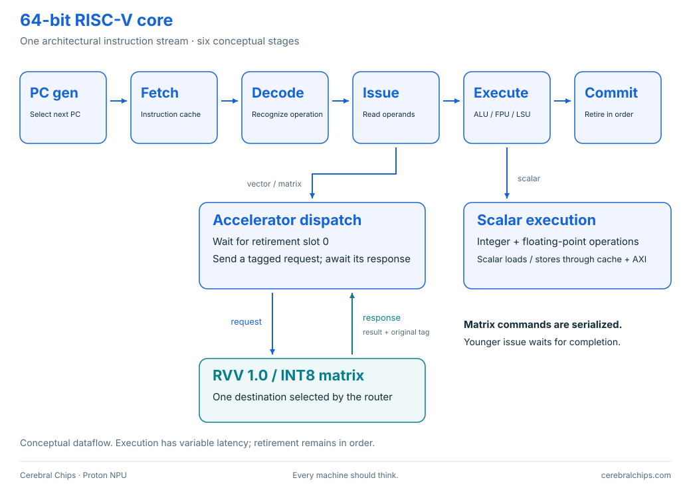

64-bit RISC-V core
The CPU that executes the program, controls scalar memory accesses, and coordinates vector and matrix work.
The main processor
The scalar core owns the program counter, scalar registers, control flow, exceptions and retirement. The vector unit and matrix engine receive instructions from this CPU; neither runs a second software program.


| Property | Current implementation |
|---|---|
| Core count / word size | One core, 64-bit scalar registers |
| Pipeline | Six stages; single issue; in-order retirement |
| Scalar execution | Integer arithmetic and scalar floating point |
| L1 caches | 4 KiB instruction cache; 8 KiB data cache |
| Instruction interface | Tagged accelerator request/response interface (implementation-specific) |
| Matrix opcodes | Custom-1, opcode 0x2B; mzero / mmacc |
| Command ordering | Accelerator dispatch waits for retirement slot 0; younger issue waits for matrix completion |
Why the ordering rules matter
A fence can flush and refetch younger instructions. Issuing a matrix command before that fence retires could execute the same accumulation twice. Our integration waits until the command is at the first retirement slot, and carries its transaction ID through completion.
Vector memory bookkeeping counts accepted requests—valid and ready—so bus backpressure cannot accidentally count one request several times. The original matrix-disabled configuration remains available.
Where to read the code
The open-source core is fetched at the pinned revision in sources.lock.json. Integration patches and upstream credits make its implementation and provenance inspectable.